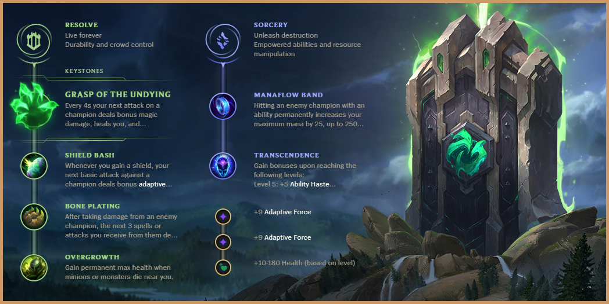
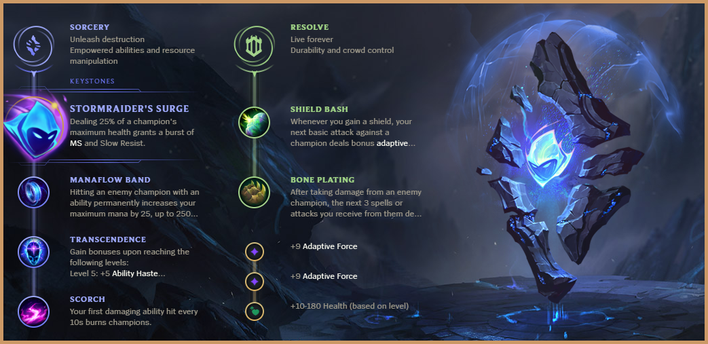

It ultimately comes down to the value of the rune trees themselves. The Sorcery tree is mandatory on Diana for Manaflow Band and the Resolve tree greatly outperforms the Domination tree on Diana. The last two rows of the Domination tree provide virtually 0 value. On Diana, Shield Bash also outperforms Sudden Impact, so for Electrocute to be the best keystone, it would have to single handedly outperform either Grasp, Bone Plating, and Overgrowth or Stormraider's Surge, Bone Plating, and Scorch. The damage comparison of Electrocute and Sudden Impact versus Grasp and Shield Bash can be seen below. The Resolve/Sorcery combination also provides Diana with crucial stats that her core items don't provide, such as health, haste, and mana.
Electrocute also requires three separate hits to proc, unlike old Thunderlord's Decree, which Diana could trigger with just her W. This makes Electrocute much stronger on ranged champions who can reliably proc it at level 1 with autos and spells, or on champions like Fizz and Qiyana who benefit more from Sudden Impact and the last two rows of the Domination tree. Those later rows are designed to reward champions who consistently roam around the map. Diana has one of the highest opportunity costs for roaming in the game. She has one of the strongest laning phases and tower-taking speeds while being one of the worst roaming champions.
The reason Grasp has overtaken Stormraider's Surge as Diana's main rune is that the game has slowed down. Stormraider's Surge and Scorch have extremely poor scaling, especially compared to the Grasp and Overgrowth that you're trading them for. Stormraider's Surge also has anti synergy with Diana's ultimate and Diana needs the additional damage/sustain from Grasp to compete in many matchups. Grasp and Overgrowth also provide Diana with additional health, which is crucial for her playstyle and cannot be obtained through her current ideal build path.
Is Grasp viable into ranged matchups?Grasp and Shield Bash are much easier to use at level 1 and 2 and then by level 3, they’re much safer and no more difficult to use than Electrocute. To use Electrocute and Sudden Impact in a ranged matchup which is the only way to gain any value from the entire page, you have to commit to an even further E down the lane compared to a melee matchup. Grasp and Stormraider’s Surge put Diana in a much better position after committing with E not only in the trade but with other enemies responding to the fight.
A common level 1 interaction is for the enemy ranged champion to try to zone Diana away from the wave. The best play in this situation, regardless of runes, is to contest them around your ranged creeps. Grasp, Shield Bash, and Bone Plating provide Diana with additional threat during these crucial early levels. Bone Plating will block around 70 damage by the time you reach level 3, which is more than an Electrocute proc, and will put Diana in a stronger position for her level 3 power spike.
Take Stormraider's Surge against certain Mid/JG/Support combos that are low DPS/CC. It's good against junglers and supports who have delayed CC like Nocturne, Ekko, and Bard. It's also good against some mid champions with consistent slows like Viktor that help you avoid their hard CC. Check the mid matchup guide to see when it's worth considering. If you're unsure, then always take Grasp. Grasp is never the wrong option and will allow you to win any game.
Grasp Of The Undying: This is the only rune and tree that allows Diana to play the way she’s intended to be played. It’s the rune that gives her the potential to win every matchup while also not falling off nearly as hard as another option like Stormraider's Surge which is her second best rune.
Shield Bash: Great early game damage that also scales extremely well. Diana can also sometimes proc it twice with W.
Bone Plating: Best sustain tool in lane. Runes like Aery, Scorch, First Strike, and Comet all proc multiple plates. This also gives you the best chance of surviving a gank and winning a duel later on in the game. Second Wind is too nerfed to ever consider taking anymore.
Overgrowth: Best way for Diana to gain health besides Grasp since the build doesn't include any health items. Diana requires health to engage melee champions and she has a 9% bonus health ratio on the shield strength that can be proc'd twice for a total ratio of 18%.
Manaflow Band: Diana has one of the lowest max mana pools in the game, ranging from 375- to a mere 800. This rune perfectly covers the amount of mana Diana requires to play the game. Without Manaflow Band you won’t be able to take full advantage of Diana’s passive and side lane pressure. Diana should always be looking to take the enemy jungler’s camps and your camps when your jungler isn't able to farm them any time soon. Without Manaflow Band you won’t be able to deal with any champion that has resists since multiple damage rotations will be necessary to kill the enemy.
Transcendence: This is basically the only way for Diana to gain haste. It’s the perfect balance of having a little haste which is more efficient at lower values and gaining big cooldown reductions at crucial moments in team fights.
Stormraider's Surge: Good option against low DPS/CC comps
Scorch: Strong early game poke. Be careful of tower aggro when poking under tower.
Double Adaptive Force is necessary to be able to two Q the ranged creeps at level 5.
This table shows the realistic rune comparison for Diana at Level 4 against a 40 MR target. Shield Bash is assumed to proc every 8 seconds, Grasp every 4 seconds, Electrocute every 20 seconds, and Sudden Impact every 12 seconds.
| Trade # | Grasp + Shield Bash Damage | Grasp Heal | Grasp HP Gain | Electrocute + Impact Damage |
|---|---|---|---|---|
| 1 | 52 | 14 | 5 | 102 |
| 2 | 80 | 28 | 10 | 102 |
| 3 | 132 | 42 | 15 | 132 |
| 4 | 160 | 56 | 20 | 132 |
Note: This table does not include Bone Plating and Overgrowth, which significantly outperform the 0s that the other two domination rows provide and are necessary for Diana's playstyle.